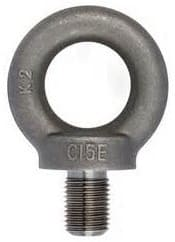

DIN 580 Рым-болт
Стандарт
DIN 580
Цена от
24,75 ₽
Размерный ряд
от M6 до M100;
DIN 580 Рым-болт DIN 580: рым‑болты — надёжное решение для подъёмных операций Что такое рым‑болт DIN 580? Рым‑болт DIN 580 — это специализированный крепёжный элемент, предназначенный для создания точек крепления при подъёме, перемещении и фиксации грузов. Его главная особенность — кольцо (рым) на верхней части, которое служит точкой зацепления для тросов, цепей, крюков и других подъёмных приспособлений. Конструктивно рым‑болт состоит из: резьбового стержня (ввинчивается в подготовленное отверстие); опорного фланца (обеспечивает равномерное распределение нагрузки); кольцевого элемента (точка крепления подъёмного оборудования). Основные характеристики и параметры Стандарт DIN 580 регламентирует следующие ключевые параметры: Диапазон диаметров резьбы: от M6 до M100; Материалы изготовления: углеродистые стали (класс прочности 4,6; 5,8; 8,8); нержавеющие стали A2 (AISI 304) и A4 (AISI 316); оцинкованная сталь (защита от коррозии); Покрытие: цинковое (горячее или электролитическое), без покр
Варианты и размеры (4)
| Наименование | Размер | Длина, мм | Материал | Покрытие | Цена |
|---|---|---|---|---|---|
| DIN 580 Рым-болт M20 | M20 | 64,40 ₽ | |||
| DIN 580 Рым-болт M22 | M22 | 69,30 ₽ | |||
| DIN 580 Рым-болт M39 | M39 | 111,00 ₽ | |||
| DIN 580 Рым-болт M45 | M45 | 126,00 ₽ |